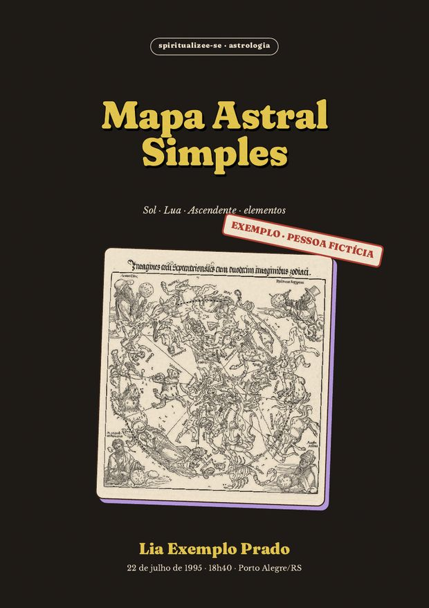
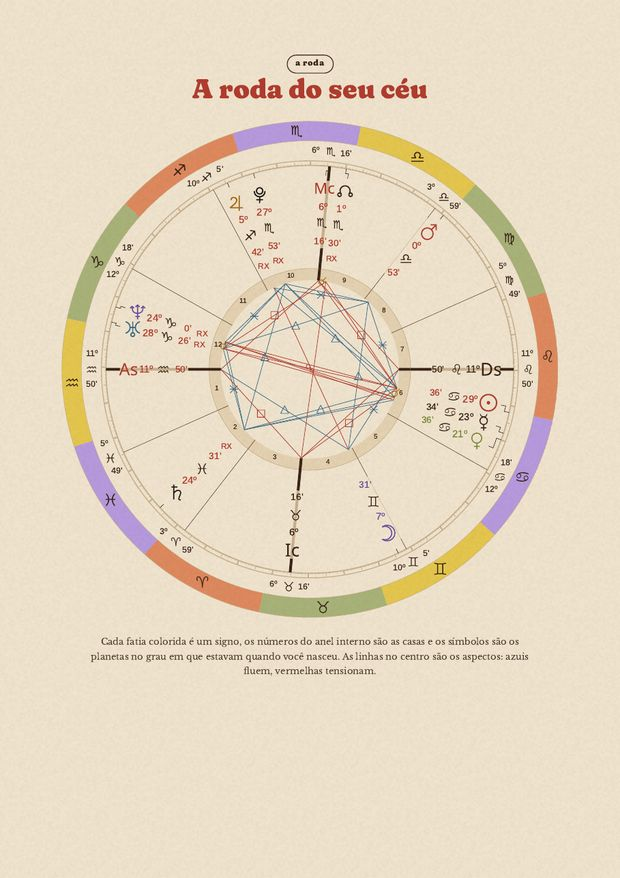
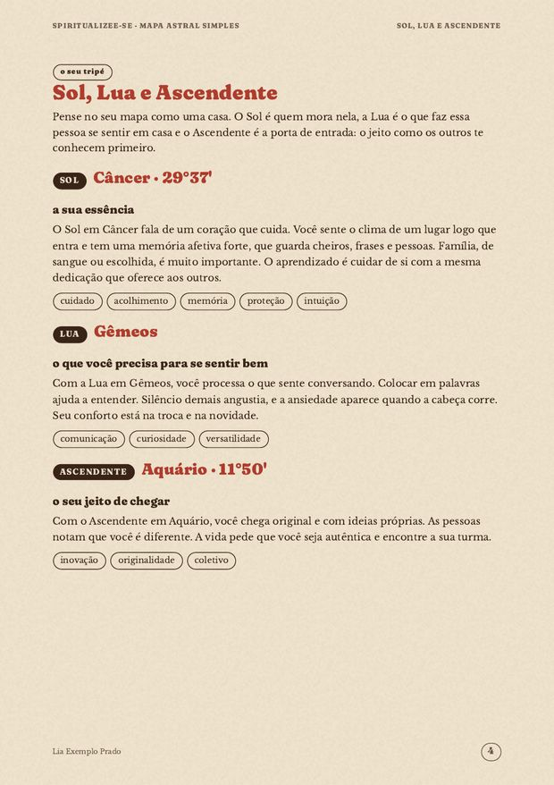

a sua essência
o que te move, onde vc brilha e o aprendizado que acompanha o seu signo solar.
Sol, Lua, Ascendente e elementos, calculados com a data, a hora e a cidade do seu nascimento. um PDF curto e personalizado, no seu whatsapp ou e-mail.
depois do pagamento vc manda nome completo, cidade, data e hora de nascimento. a gente calcula o seu céu e monta o PDF.

não é horóscopo de signo. é o seu céu, calculado pro minuto e pro lugar em que vc nasceu.
os três pontos que mais dizem sobre vc, mais o temperamento do seu mapa.
o que te move, onde vc brilha e o aprendizado que acompanha o seu signo solar.
do que o seu emocional precisa pra ficar bem, e o que costuma te tirar do eixo.
como as pessoas te percebem primeiro e o que a vida te pede. (precisa da hora de nascimento.)
e ainda: a roda do seu mapa · Mercúrio, Vênus e Marte · elementos e ritmo · "o que isso diz sobre vc" em poucas palavras · 3 perguntas pra levar.
páginas de um mapa gerado pra uma pessoa fictícia, só pra vc ver como é. o seu vem com o seu céu e o seu nome.


toca no botão. a mensagem já vai escrita, com o espaço pros seus dados.
nome completo, cidade, data e hora de nascimento (a hora tá na certidão).
R$ 9,90, preço fixo.
em até 24h depois do pagamento confirmado.
vc vai pro checkout seguro da Kiwify.
R$ 9,90 no Pix ou no cartão.
na página de confirmação: nome completo, cidade, data e hora de nascimento.
no seu whatsapp (ou e-mail) em até 24h.
não sabe a hora? dá pra fazer mesmo assim, com Sol, Lua e elementos. o Ascendente fica de fora, porque depende da hora exata.
R$ 9,90
preço fixo. sem assinatura, sem taxa surpresa.
quero meu mapa simpleso checkout e o whatsapp oficial ainda não foram configurados. enquanto isso, o botão leva pros contatos do site.
porque o cálculo é feito por software com efemérides astronômicas e os textos foram escritos por nós antes, pra cada combinação de signo. o que muda de pessoa pra pessoa é o céu, e isso a gente calcula de verdade.
é a porta de entrada: se fizer sentido, o próximo passo é o mapa de carreira, logo abaixo.
o mapa astral de carreira lê o mesmo céu pelo lado do trabalho: vocação, prosperidade e rotina, em cerca de 20 páginas.
| simples | carreira | |
|---|---|---|
| Sol, Lua, Ascendente | ✦ | ✦ |
| roda do mapa e elementos | ✦ | ✦ |
| Meio do Céu e casa 10 (vocação) | — | ✦ |
| casa 2, Vênus e Júpiter (dinheiro) | — | ✦ |
| casa 6, Marte e Saturno (rotina) | — | ✦ |
| síntese + plano de 30 dias | — | ✦ |
| páginas | cerca de 7 | cerca de 20 |
R$ 37
ou em até 6x no cartão
quero o mapa de carreira ver tudo o que vem nelehoróscopo fala do signo solar, igual pra todo mundo do mesmo mês. o mapa usa a data, a hora e a cidade do seu nascimento, então a Lua, o Ascendente e as casas são só seus.
a gente faz com o Sol, a Lua e os elementos. o Ascendente fica de fora. se a Lua mudou de signo no dia em que vc nasceu, o PDF avisa.
em PDF, no seu whatsapp (ou e-mail), em até 24h depois do pagamento confirmado.
o cálculo é astronômico, feito por software com efemérides. os textos de interpretação foram escritos por nós e são escolhidos pelas posições do seu mapa. não é texto inventado na hora por robô.
dá. é o mesmo cálculo, com muito mais leitura sobre vocação, dinheiro e rotina. é só responder a mensagem em que o seu mapa simples chegou.
usamos nome, cidade, data e hora só pra calcular o seu mapa. não vendemos nem compartilhamos. detalhes na política de privacidade.
não. é material de autoconhecimento e entretenimento.
material de autoconhecimento e entretenimento, baseado em astrologia. não é previsão de futuro, não substitui orientação profissional psicológica, médica, financeira ou jurídica e não garante resultados.